Hachimantai
Hachimantai · Iwate
Hachimantai
Highlighted on the Iwate map.
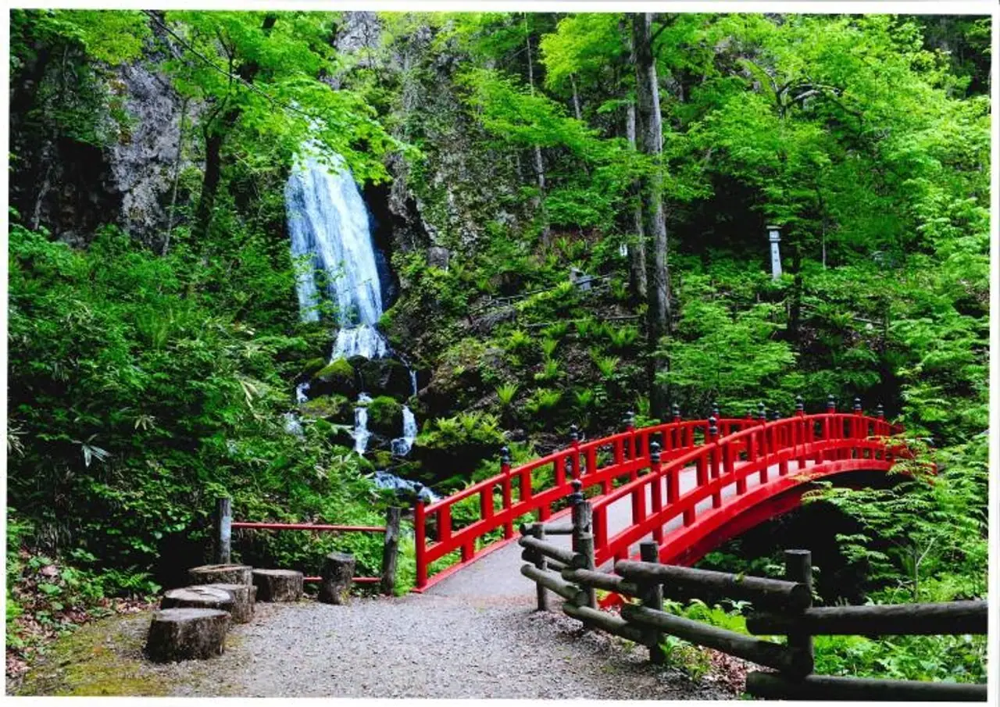
Stay
ペンションアサンギ
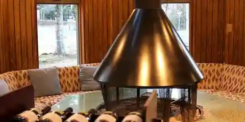
Penshon'Asangi
Pension in Hachimantai, Iwate.
ビジネスホテル西根
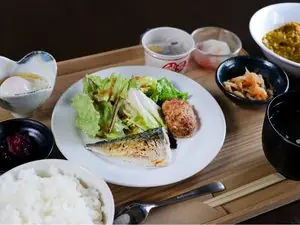
Bijinesuhoteru Nishine
Hotel in Hachimantai, Iwate.
天然温泉付 ペンション＆貸別荘 レンガ館
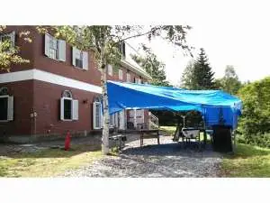
Tennen Onsen Tsuki Penshon & Kashibessou Renga Kan
Pension in Hachimantai, Iwate.
八幡平温泉郷 ペンション日の出
Hachimantai Onsen Sato Penshon Hinode
Pension in Hachimantai, Iwate.
ペンション ムース
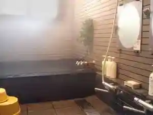
Penshon Muusu
Pension in Hachimantai, Iwate.
ペンションアドバンテージ
Penshon'Adobanteeji
Pension in Hachimantai, Iwate.
温泉ゲストハウス やすもり
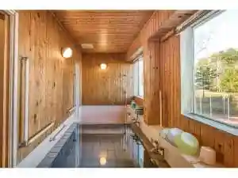
Onsen Gesutohausu Yasumori
Onsen lodging in Hachimantai, Iwate.
八幡平ライジングサンホテル
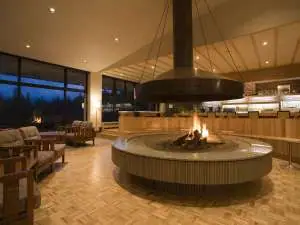
Hachimantai Raijingusanhoteru
Hotel in Hachimantai, Iwate.
Dining
レストラン LAMP
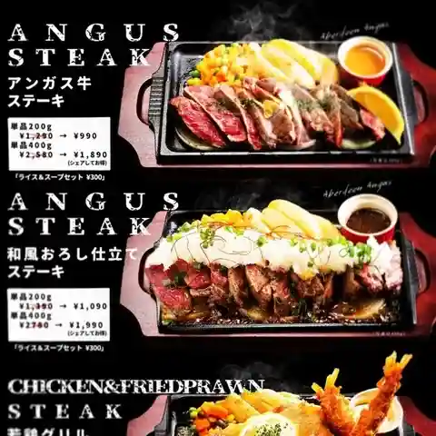
Resutoran Lamp
Shokudo diner in Hachimantai, Iwate.
四季館 彩冬
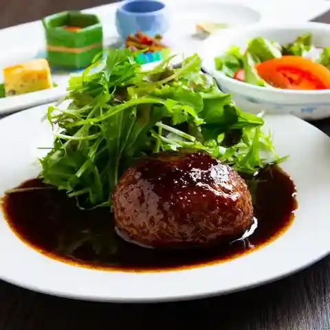
Shiki Kan Sai Fuyu
Ryokan restaurant in Hachimantai, Iwate.
むら重
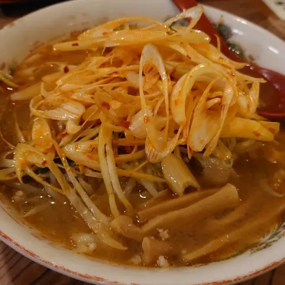
Mura Juu
Shokudo diner in Hachimantai, Iwate.
北の蕎麦屋 本店
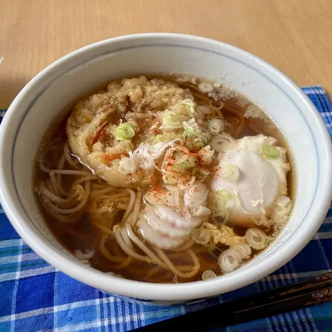
Kita No Sobaya Honten
Soba restaurant in Hachimantai, Iwate.
ふうせつ花
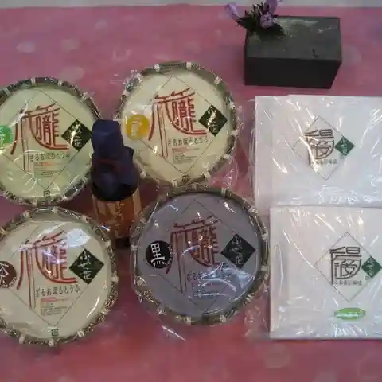
Fuusetsu Hana
Tofu restaurant in Hachimantai, Iwate.
和食と郷土料理 七時雨
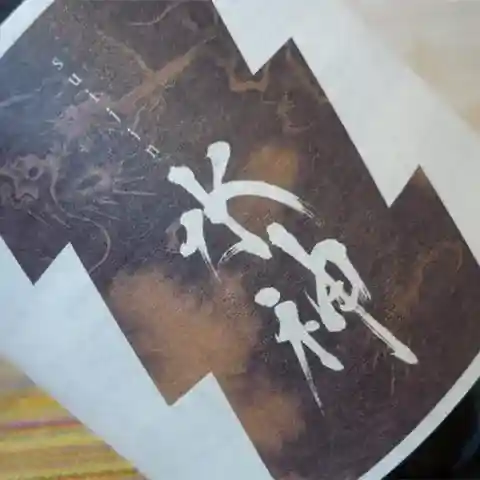
Washoku To Kyoudoryouri Shichiji Ame
Local-cuisine restaurant in Hachimantai, Iwate.
味処佐和
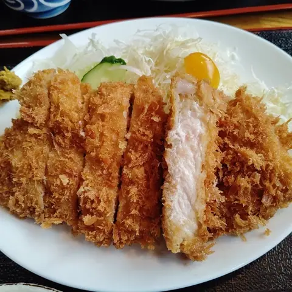
Ajidokoro Sawa
Seafood restaurant in Hachimantai, Iwate.
岩手山ベーカリー
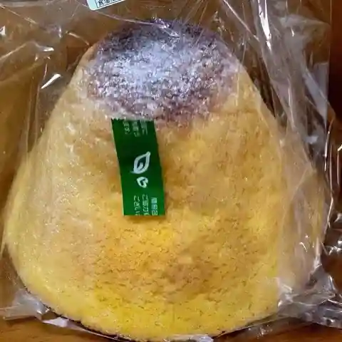
Iwate Yama Beekarii
Bakery in Hachimantai, Iwate.
岩手山サービスエリア(下り線)スナックコーナー
Iwate Yama Saabisueria ( Kudari Sen ) Sunakkukoonaa
Shokudo diner in Hachimantai, Iwate.
藤七温泉 彩雲荘
Fuji Shichi Onsen Saiun Sou
Inn restaurant in Hachimantai, Iwate.
丸初
Maru Hatsu
Shokudo diner in Hachimantai, Iwate.
道の駅にしね レストラン
Michi No Eki Nishine Resutoran
Shokudo diner in Hachimantai, Iwate.
松川温泉 峡雲荘
Matsukawa Onsen Kyou Kumo Sou
Inn restaurant in Hachimantai, Iwate.
ノレグレット
Noreguretto
Café in Hachimantai, Iwate.
岩手山サービスエリア(上り線) スナックコーナー
Iwate Yama Saabisueria ( Nobori Sen ) Sunakkukoonaa
Shokudo diner in Hachimantai, Iwate.
ANAクラウンプラザリゾート安比高原
Ana Kuraunpurazarizooto Appikougen
Hotel restaurant in Hachimantai, Iwate.
八幡平マウンテンホテル
Hachimantai Mauntenhoteru
Hotel restaurant in Hachimantai, Iwate.
八幡平ハイツ
Hachimantai Haitsu
Hotel restaurant in Hachimantai, Iwate.
たかはし
Takahashi
Eel restaurant in Hachimantai, Iwate.
田山ドライブイン
Tayama Doraibuin
Inn restaurant in Hachimantai, Iwate.
安比高原 森のホテル
Appikougen Mori No Hoteru
Hotel restaurant in Hachimantai, Iwate.
おあげんせ
Oagense
Gelato and ice-cream shop in Hachimantai, Iwate.
Sights
Kojiya Motomiya
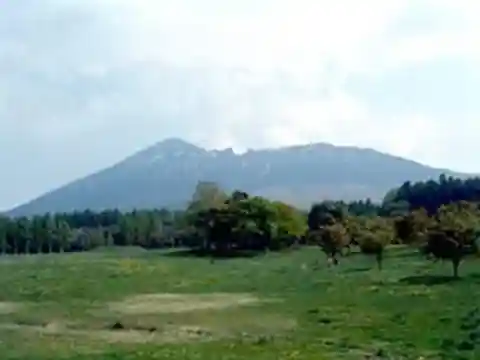
While preserving traditional brewing methods, we strive to develop new products every day.
Kitadate Noodle Factory
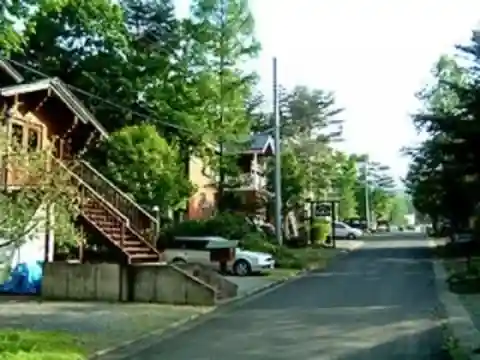
Half-baked soba made by kneading brown soba harvested at a directly managed farm in the Appi Highlands with southern wheat from Iwate Prefecture.
Appi Kogen Ranch Dairy Products
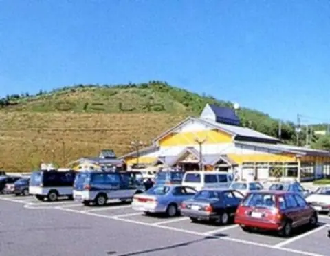
At Appi Kogen Farm, in order to produce safe milk, we produce our own grass to feed the cows, create an environment that does not cause stress to the cows, and improve the quality of milk, which is essential for dairy products.
Hazawa Confectionery
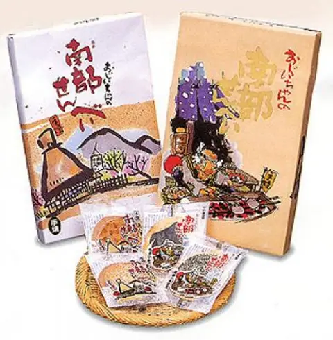
Nanbu rice crackers are made using Nanbu wheat from Iwate Prefecture and are baked one by one with great care.
Ashiro Gentians
When you think of "gentian", you have the image of a bon flower, but in summer, it looks hazy and when combined with white flowers, it creates a cool feeling.
Nakayama-so Natural Recreation Village
Dishes made with local ingredients in hot springs fed directly from the source.
Washinoo Co., Ltd.
Established in 1829, it is one of the oldest breweries in the prefecture.
Tamenai Lone Cherry Tree
A single cherry tree blooms majestically on a small hill with a distant view of Mt.
Fusetsuka
A handmade tofu shop located along Route 282 in Hachimantai City.
Higuchi Senbei Shop
A Nanbu rice cracker shop located in Hachimantai City. We create new products while valuing traditional manufacturing methods and taste.
Iwate Prefectural Citizens’ Forest (Hachimantai Forest)
It was established as a place for prefectural residents to spread emotional connection through greenery.